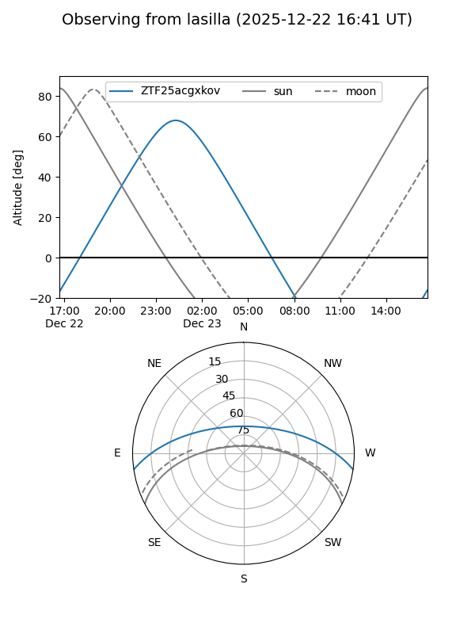
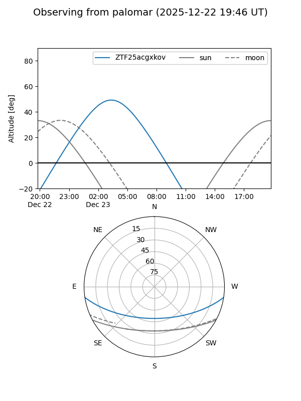
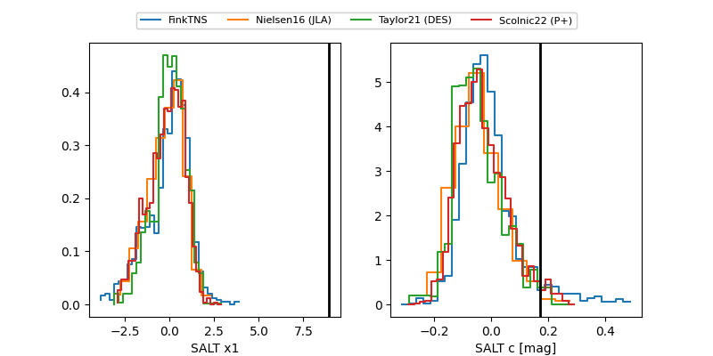

ZTF25acgxkov
Target ZTF25acgxkov at 2025-12-20 05:22
Aliases and brokers:
FINK: fink-portal.org/ZTF25acgxkov
Lasair: lasair-ztf.lsst.ac.uk/objects/ZTF25acgxkov
ALeRCE: alerce.online/object/ZTF25acgxkov
alt names
ZTF25acgxkov (ztf,fink_ztf)
Coordinates:
equatorial (ra, dec) = 24.9702,-7.46829
equatorial (HMS+DMS) = 01:39:52.84,-07:28:05.85
galactic (l, b) = (155.4441,-67.23007)
Flags:
Photometry:
last ztfg=20.08
1 ztfg detections
Lightcurve

Visibility


Additional plots
